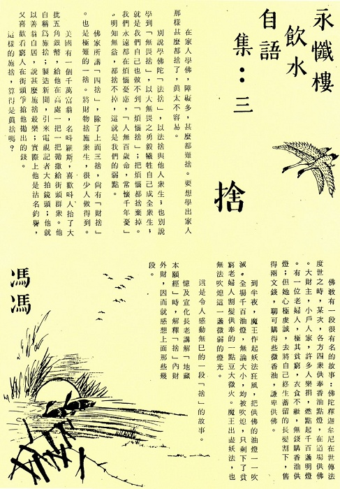

舍
冯冯
在家人学佛，障碍多，什么都难舍。要想学出家人那样什么都舍了，真太不容易。
别说学佛陀“法舍”，以法舍与他人众生；也别说学到“无畏舍”，以大无畏之勇毅牺牲自己成全众生；就是我们自己也做不到“烦恼舍”；把烦恼都舍弃掉。我们永远都在烦恼忧虑，“人无百岁命，常怀千年忧”。明知无益，都舍不掉，这就是我们的弱点。
佛家所讲“四舍”，除了上面三舍，尚有“财舍”。也是极难的一舍。将财物舍施众生，很少人做得到。
美国有一个千万富翁，名叫罗斯，喜欢叫人抬了大批五角银币，给他在高处一把一把抛撒给街头群众。他自称为施舍，制造新闻，引来电视记者大拍镜头；他就以善翁自居，说什么施舍最乐；实际上他是沽名钓誉，又喜欢看穷人在街头争抢他抛出的钱。
这样的施舍，算得是真舍吗？
佛教有一段很有名的故事：佛陀释迦牟尼在世传法度世之时，某次，各方四众供奉香油点灯，在道场供佛。大财主，小户人家，许多人乐捐，燃点起千百盏明灯。有一位老妇人，极其贫穷，衣食不继，无钱购香油供灯；但她心极虔诚，去将自己终生蓄留的长发割下，售得两文钱，聊可购得些微香油，谦卑供佛。
到半夜，魔王作起妖法狂风，把供佛的油灯一一吹灭。全场千百油灯，无论大小，均被吹熄，只剩下了贫穷老妇人割发供奉的一点豆大微火。魔王出尽妖法，也无法吹熄这一盏微弱的灯光。
这是令人感动无巳的一段“舍”的故事。
忆及宣化长老讲解“地藏本愿经”时，解释“舍”内财外财，因而就感想上面那些几段。

原载万佛城《金刚菩提海》第122期：1980年07月1日
转贴来源：万佛城《金刚菩提海》